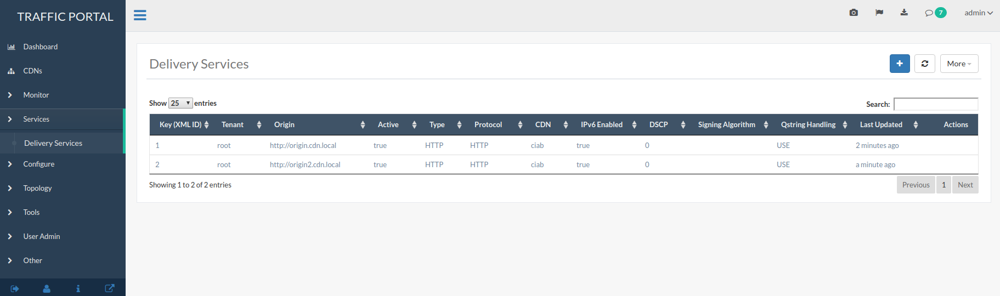
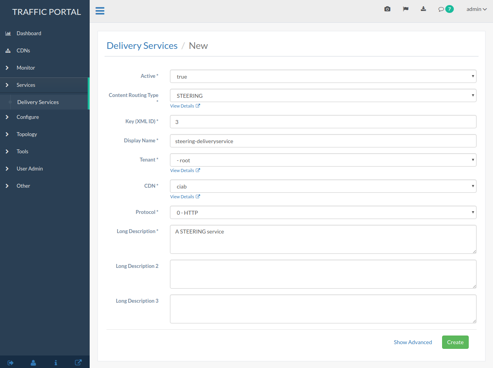

Configure Delivery Service Steering¶
Create two target Delivery Services in Traffic Portal. They must both be HTTP Delivery Services that are part of the same CDN.
Fig. 27 Target Delivery Services¶
Create a Delivery Service with Type
STEERINGorCLIENT_STEERINGin Traffic Ops.Fig. 28 Creating a STEERING Delivery Service¶
Click and then use the blue + button to assign targets.

Fig. 29 STEERING Targets¶
If desired, a ‘steering’ Role user can create filters for the target Delivery Services using steering/{{ID}}/targets
Note
This is only available via the Traffic Ops API; no functionality for manipulating steering targets is offered by Traffic Portal. This feature has been requested and is tracked by GitHub Issue #2811
Any requests to Traffic Router for the steering Delivery Serviceshould now be routed to target Delivery Services based on configured weight or order.
{kind=link}
{kind=link}
Note
This example assumes that the Traffic Ops instance is running at to.cdn.local and the administrative username and password are admin and twelve, respectively. This is not recommended in production, but merely meant to replicate the default CDN in a Box environment!